第37天：静态链接(上)
第37天：静态链接(上)
终于到了最后一关——链接器。过了这关，我们的编译系统就大功告成了。
为什么要链接？
在编写大型程序时，我们不可能把所有代码写在一个文件里，一般都是按照功能划分模块，每个模块对应一个或多个 .c；
编译器的工作是把每个 .c 编译成 .o；
链接器的工作是把这些 .o 按某些规则拼接在一起，形成一个可以 run 的可执行文件。
链接可分为静态链接和动态链接。
这两种方式有何不同呢？
简单来说，它们的区别在于“链接动作发生的时间”和“库代码被复制的方式”。
1、静态链接
在编译阶段，链接器将程序调用的库函数代码，直接完整地复制到最终的可执行文件中。
就像你在写论文时，把参考书上的原文直接抄写到了你的论文里。这导致的结果是你的论文非常厚，但好处是读者不需要再去翻参考书了。
2、动态链接
在编译阶段，链接器只在可执行文件中记录所需的库文件名称和符号信息，而不复制库代码。真正的链接动作推迟到程序加载时或运行时进行，由操作系统完成。
就像你在写论文时，只是在文中标注了“详见《xxx》第XX页”，并没有把原文抄下来。这样你的论文很薄。但是，读者在阅读你的论文时，需要随时查阅你引用的文献，否则就不知道你说的是什么。
二者的差异对比如下表。
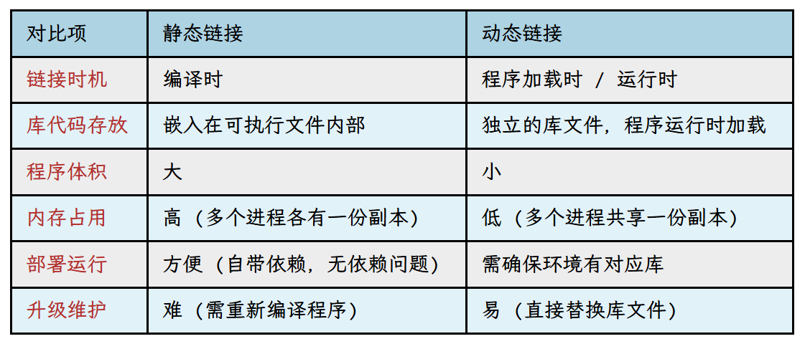
我们要写的链接器比较简单，只考虑静态链接。
整个链接过程可以分成下面的步骤:
-
收集每个 .o 的信息
可以理解为上节课的逆过程，上节课我们是把 .o 的各部分（用各种结构体、链表描述）打包到 elf_32 格式中，这节课是把 elf_32 格式的内容还原出来（装进各种结构体和链表）。 -
符号解析
这是一个“连连看”的过程。例如 a.o 里面定义了 foo 函数，b.o 里面调用了 foo 函数，那么链接器就认为“对上了”。
如果同一个全局符号在多个 .o 中都有定义，链接器就抛出符号重复定义的错误（为了简化问题，这里忽略强弱符号的裁决），链接失败；如果某个全局符号被引用了，但是在所有的 .o 中都找不到它定义，则抛出未定义符号错误，链接失败。 -
查找入口点
查找入口点（Finding the Entry Point） ，是指链接器在生成可执行文件时，确定程序第一个被执行的指令在哪里的过程，第一条指令所在的地址就是程序的 “入口点”。操作系统加载程序后，会直接跳转到该地址开始执行。
注意，程序的入口点 ≠ main函数。
main 函数是我们编写的代码的入口，但在 main 执行前，需要先执行初始化代码（如初始化全局变量、解析命令行参数、设置栈帧等）；入口点是初始化代码的起始地址，初始化完成后，才会调用 main 函数；
简单说：入口点是操作系统与程序的 “对接点”，main 是用户代码的 “起点”。 -
地址分配
简单说，链接器的地址分配（Address Assignment/Layout） 是指链接器将多个目标文件（.o）的 section（如.text、.data 等）合并，并为每个段分配最终的虚拟地址（Virtual Address） 和文件偏移（File Offset） -
符号地址解析
当地址分配完成后，每个段的虚拟地址就确定了。段的虚拟地址确定了，段内定义的符号的地址就确定了：用段基地址加上符号的偏移地址，得出符号的最终地址。
另外，也是很重要的一点，就是看看这个符号是否被其他文件引用，如果是，则要把此符号的最终地址“传递”给那个文件的符号表。 -
符号重定位
重定位开始前，必须完成两件事：
1） 符号解析完成：所有 “引用符号” 已绑定到对应的 “定义符号”
2） 地址分配完成：每个 “定义符号” 已获得唯一的绝对虚拟地址
上面两个步骤，我们已经在第 2、4 步骤完成了。
接下来就是读取每个 .o 的重定位表，根据公式计算修正后的地址，并把修正后的地址写到合适的位置。具体细节我会在讲解代码的时候说清楚。 -
组装可执行文件并输出
这是最后一步，和上节课输出目标文件相比，可执行文件多了一个程序头表，少了重定位表。
下面，我们分步骤讲解代码。
读取elf
1 | |
以上，就是结构体 linker_t;
先看第 3 行，elf_head 是链表的头节点，针对每个输入文件 .o 都会创建一个 elf_t 结构体，并把此结构体挂在这个链表上。其他字段等用到的时候再介绍。
my_elf_t 在上节课已经介绍了，这里再复习一下。
1 | |
第 14 行，用于加入 linker_t 的 elf_head 链表。
下面看 read_elf 函数的代码。
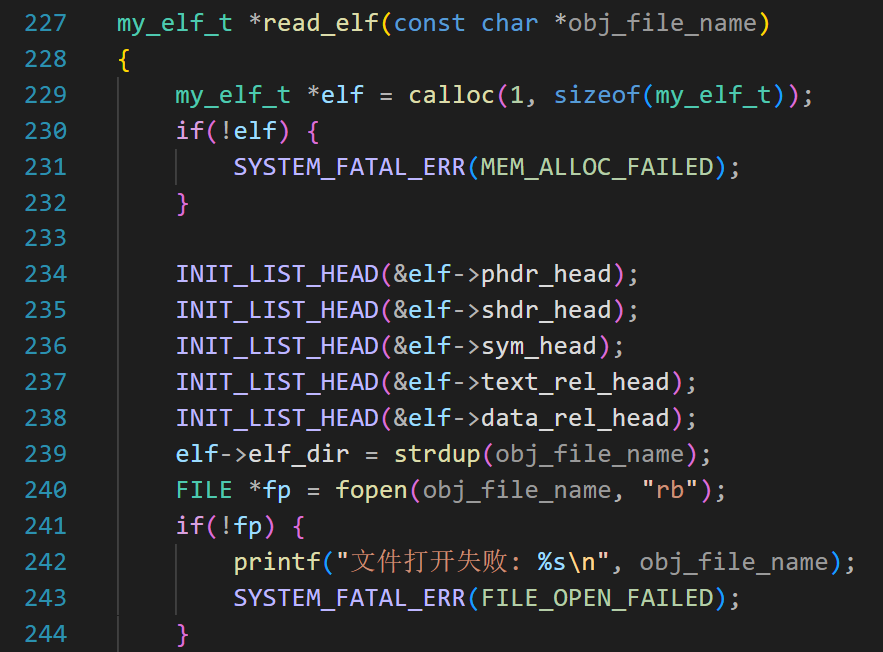
此函数的参数是 .o 文件的路径；
第 229，为这个 .o 分配 my_elf_t 结构；
第 234 ~ 238 对 my_elf_t 结构做初始化，针对五个链表的头节点，全部初始化为空。
第 239，拷贝 .o 的路径，赋值给 elf_dir;
第 240 行，以二进制读模式打开 .o 文件。
打开后干什么呢？当然是收集信息了。
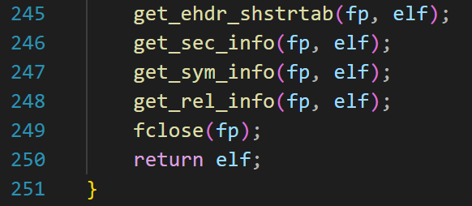
下面逐一讲解这些函数。
读取文件头和shstrtab
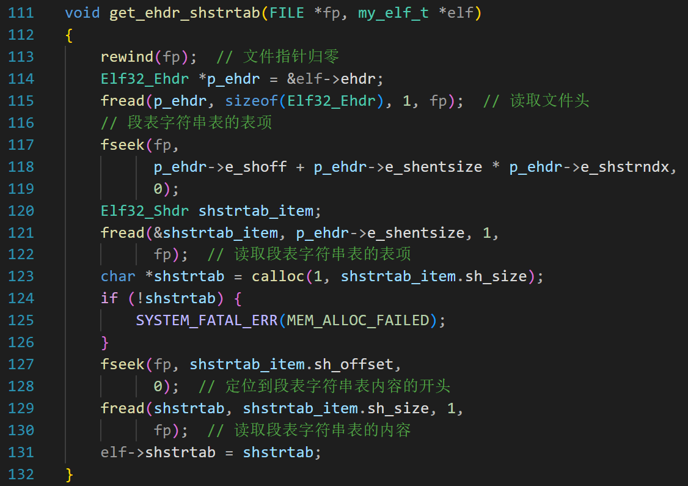
第 114，让 p_ehdr 指向 my_elf_t 的 ehdr 结构体；
第 115，读取文件头;
fseek 是 C 语言标准库 <stdio.h> 中用于移动文件位置指针的函数，简单说就是用来定位你接下来想从文件的哪个位置开始读或写。
函数原型：int fseek(FILE *stream, long offset, int whence);
参数的含义：
stream: 指向文件的指针（由 fopen 返回）。
offset: 偏移量。你要移动多少个字节。正数表示向后，负数表示向前。
whence: 参考点。也就是 offset 从哪里开始算。它有三个宏常量可选：第 128 行，参数 0 表示从文件开头；
第 117，offset = （段表的偏移 + 段表项的大小 * 段表字符串表项的索引），从文件起始位置偏移 offset，所以就定位到了段表字符串表项，此时 fp 指向段表字符串表项的起始位置；
第 121 行，读取段表字符串表项。
第 123 行，根据段表字符串表项的 sh_size 分配内存，因为段表字符串表的长度就是这么多；
第 127 行，sh_offset 表示段表字符串表的偏移，意思是从这个位置开始读;
第 129 行，读取段表字符串表项的内容;
第 131 行，让 elf->shstrtab 指向刚才读取的段表字符串表;
为什么先要读取段表字符串表呢？上节课已经说了，所有段的名字都在这里面，这就是一个“花名册”，只有拿到了这个花名册，才能进一步分辨出每个段是干什么的。
读取段表项
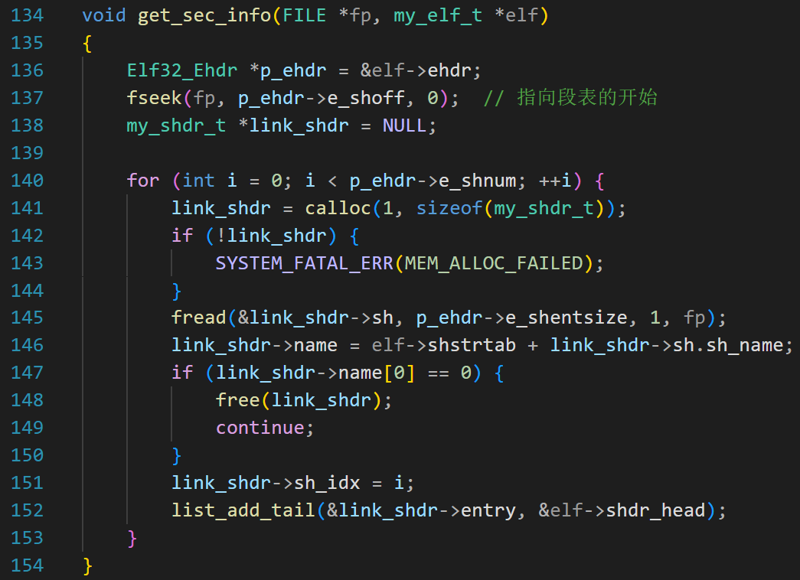
第 137 行，把读取位置定位到段表的开始;
段表的个数由 e_shnum 记录。
第 140 行，循环读取每个段表项;
第 145 行，填充 my_shdr_t 结构体中的 Elf32_Shdr 结构;
第 146 行，根据 sh_name 字段，再结合段表字符串表，获得段的名字;
第 147 行，如果名字为空，说明是空表项，跳过;
第 151 行，记录索引;
第 152 行，把段表项加入此 elf（代表当前 .o 文件） 的链表。
读取字符串表和符号表
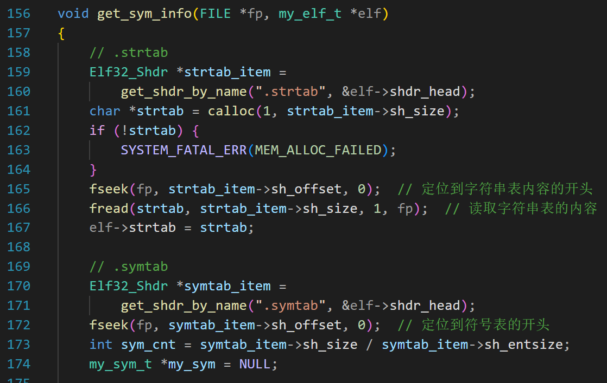
既然读出了段表项，那么接下来查询段的信息就方便了。
第 160 行，根据名字 “.strtab” 在链表中查找字符串表表项;
找到后，根据字段 sh_size 获得其大小，并为字符串表分配内存。
第 165 行，把读取位置定位到字符串表的起始位置;
第 166 行，读取字符串表;
第 167 行，让 elf->strtab 指向刚才读取的字符串表;
第 170 行，在链表中查询符号表表项，目的是获取符号表的偏移 sh_offset;
第 172 行，同理，把读取位置定位到符号表的开头；
第 173 行， sh_size 是符号表的总大小，除以每个表项的大小，就是表项的数目;
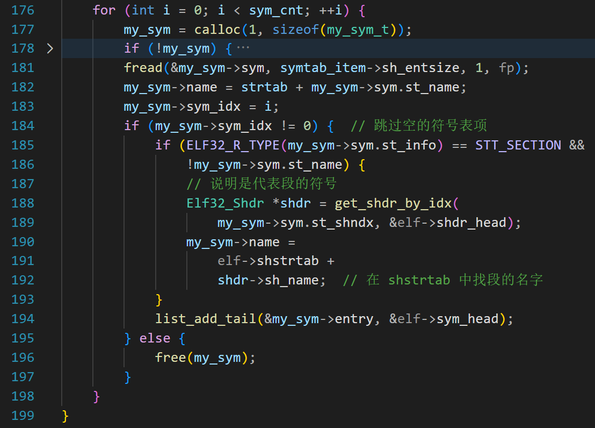
第 176 行，循环读取符号表的每个表项;
第 181 行，把表项的数据读取到 my_sym_t 的 Elf32_Sym 结构中;
第 182 行，根据字符串表和 st_name，得到符号的名字;
第 183 行，记录符号的索引;
空符号的索引是 0，我们跳过空符号。这里是用索引判断是不是空符号，而不是用名字，这是因为对于段名符号（.text 或者 .data），虽然名字也是空（上节课讲过），但是不能跳过，而且要特殊处理。
第 185 到 193 处理段名符号，段名符号的名字如何获得呢？其实就是它们所在段的名字。
第 188 行，get_shdr_by_idx 是一个辅助函数，根据段表项的索引返回这个段表项的 Elf32_Shdr 结构。
所以，188~189 的意思是返回 .text 段或者 .data 段的段表项。
190 ~ 192 行，段的名字是 elf->shstrtab + shdr->sh_name; 这也是段符号的名字。
194，把表示此符号的 my_sym_t 结构加入 elf（代表当前 .o 文件）的 sym_head 链表。
读取重定位表
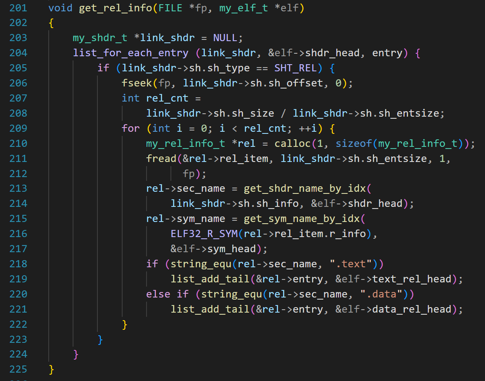
有了前面的铺垫，这段代码我们仅抓重点讲。
第 204 行，遍历段表项的链表，第 205 行，查找类型为重定位表的表项;
第 206 行，让文件位置指针指向重定位表的开始（可能是 .rel.text，也可能是 .rel.data）;
第 207 行，求重定位表包含多少个条目;
第 211 行，读取一个条目;
第 213 行，get_shdr_name_by_idx 的作用是根据段表项的索引，返回这个段的名字;
对于重定位表来说，sh_info 指示被修补的节的索引，所以第 213 行，返回的是被修补段的段名，保存到 rel->sec_name;
第 215 行， ELF32_R_SYM(rel->rel_item.r_info) 的意思是提取重定位条目的符号的索引，所以 get_sym_name_by_idx 函数返回的是需要重定位的符号名，保存到 rel->sym_name;
第 218~221，根据 rel->sec_name（也就是要修补段的名字），把 rel 添加到 elf 的重定位链表;
到了这里，对 .o 的读取就基本结束了（还差代码段和数据段）。
程序头表
之前，我们是不区别“节”和“段”的，经常把这两个词混用，但都是指 section。
不过从这里开始，我们要区分它们，section 是节，以前的段表，其实是节表或节头表。
前面我们讲过，链接器要完成“合并同类项”的工作，就是把每个.o 的同名节拼在一起，拼在一起后的这个东西，叫 “segment”，翻译为段。
“segment”由程序头表描述。一般只有可执行文件包含程序头表。
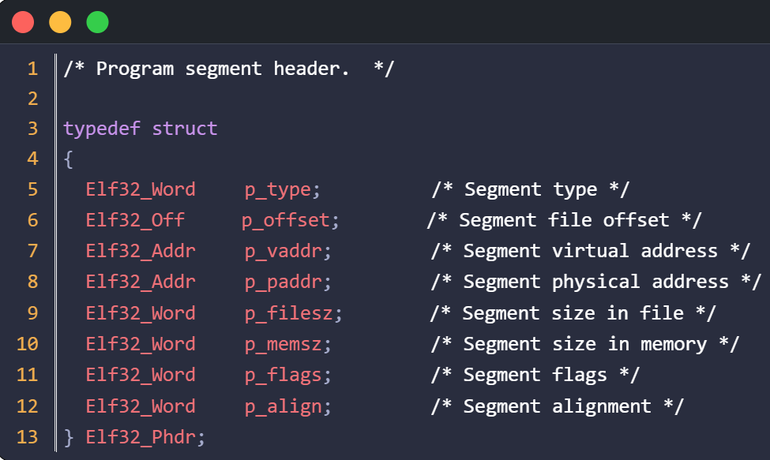
以上结构体描述了程序头表项。
每个表项 32 字节。每个字段含义如下表。
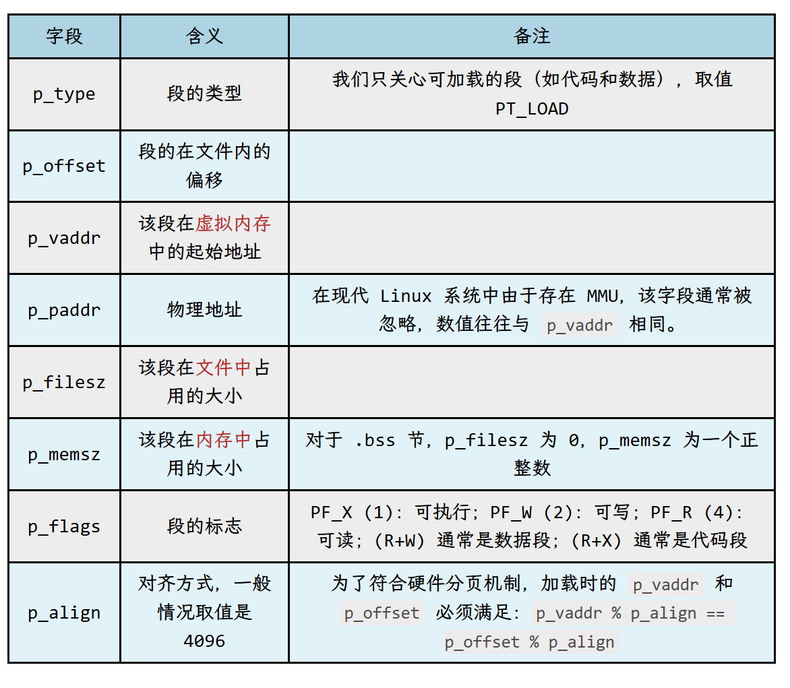
举个例子。
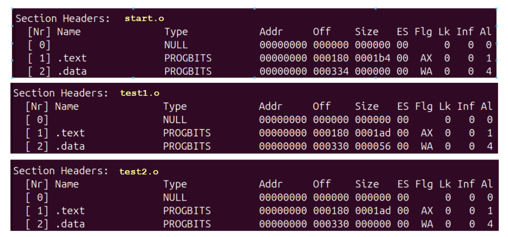
上图是 3 个 .o 的节头表。
链接后的可执行文件（假设叫 a.out）也有节头表：
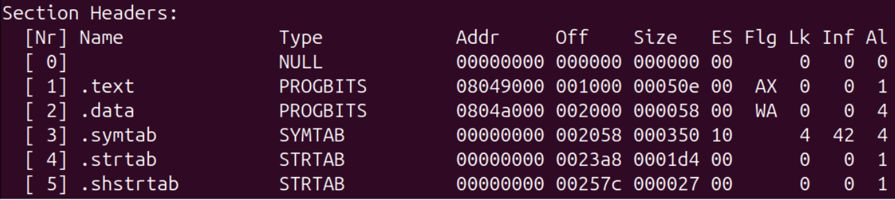
[1] .text 是把上面 3 个 .o 的.text 合并到一起了（0x1b4 + 0x1ad + 0x1ad = 0x50e）；
[2] .data 因为只有 test1.o 有 .data，所以不涉及合并，直接把 test1.o 的 .data 拿过来就可以(0x56后面填充了 2 字节，所以大小是 0x58)；
而且 a.out 多了一个程序头表：
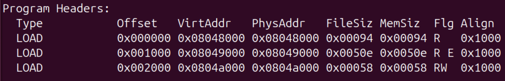
一共 3 个条目，一共占 32 * 3 = 96 字节。
还有一个地方要注意，就是最后一列，Align 是 0x1000;

上图左边就是 a.out 的组成示意图。
1、地址偏移从 0 开始；先是文件头，然后是程序头表，一共占用 52 + 96 = 148（0x94）字节，然后用零填充，一直填充到 0x1000 之前（用灰色表示填充）。
2、从 0x1000 开始到 0x150e 之前是代码段。还是用零填充，一直填充到 0x2000 之前。
3、从 0x2000 开始，是数据段，大小是 0x58。
4、数据段之后，依次是符号表，字符串表，节头表字符串表，到 0x25a1，结束。
5、最后是节头表，先做了一个 4 字节的对齐，从 0x25a4 开始，到 0x2693 结束。
对于 1~3 是可以加载的段，因为是 p_type 是 PT_LOAD；
有的读者问，为什么要填充到 0x1000、0x2000 呢？这不是浪费硬盘吗？
这是一个好问题。
我们先看看这个 a.out 加载到内存中是什么样子。请看右边的图。
根据程序头表，我们发现链接器给这 3 个段分配的虚拟地址分别是 0x08048000，0x08049000，0x0804a000
程序头表的最后一列，Align 是 0x1000，什么意思呢？
段加载到虚拟内存时，其起始虚拟地址必须是 align 值的整数倍；是的，这既是硬件的要求，也是操作系统的强制约束。
所以，地址都是 0x1000 的倍数；但是为什么从 0x08048000 开始，而不是从其他数字开始（例如 0x07650000）？
对于 Linux 系统 32 位可执行文件，默认的基地址是 0x08048000；
从 CPU 的角度讲，在内存层面要遵循权限隔离原则
页是权限的最小单位：CPU 的 MMU（内存管理单元）只能按页（通常是 4KB）来设置 Read/Write/Execute 属性。
不能混住：如果一个 Segment（如只读的代码段）和另一个 Segment（如可读写的数据段）挤在同一个物理页里，系统就无法给这个页设置单一的权限。
所以，每个 Segment 的起始虚拟地址必须是页大小的整数倍（即 0x1000 对齐）。
以上只解释了内存中的段要按页对齐，并没有解释为什么磁盘上的段也要对齐。
Linux 加载程序时，并不是用 read() 把文件读进内存，而是用 mmap() 把磁盘文件直接映射到虚拟内存。
为了让这种映射效率最高，硬件要求文件内的偏移量（File Offset）和内存中的虚拟地址（Virtual Address）必须对齐。
公式：Virtual_Address % Page_Size == File_Offset % Page_Size
为了满足这个公式，链接器在布局各个段时，如果段的大小没凑够 4KB，就会在磁盘文件里填充 0。虽然这浪费了一点磁盘空间，但换取了极快的启动速度（内核只需要修改页表，不需要搬运数据）。
下面，我们继续看代码。
收集拥有同名节的目标文件
1 | |
seg_t 用来描述段，包括名字，虚拟地址，偏移等。
因为要把所有 .o 的同名节合并，第 6 行是链表的头节点，用来记录拥有对应节的文件序列。
举个例子，假设该 seg_t 的名字是 “.text”，那么 owners 这个链表上就是所有拥有 .text 节的 .o(用 elf_t 结构体描述);
第 7 行的 blocks，等用到的时候再讲。
1 | |
这个结构体在本文开头出现过，我们已经了解了 elf_head 链表。
现在看看这个结构体的初始化
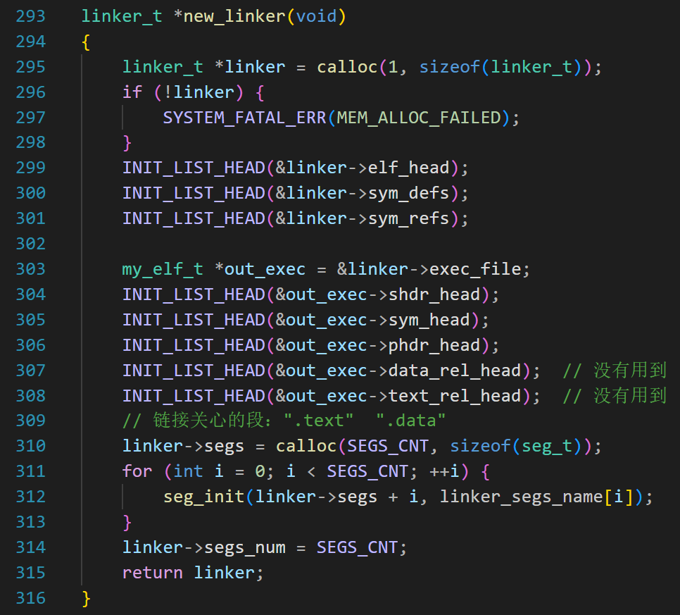
第 299~301 行，初始化 3 个链表的头节点。
第 303 行， linker->exec_file 用来组织最终的可执行文件（也就是链接器的输出文件），它里面有 3 个链表，shdr_head、sym_head 和上一节的类似，因为可执行文件也有节头表、符号表，另外，可执行文件还有程序头表，这个后面会讲。
第 307~307 行，链接器会根据每个.o 的重定位表项做地址的修正，所以生成的可执行文件就不包括重定位表；虽然初始化了头节点，其实用不上这2个链表。
第 310 行，给 linker->segs 分配内存;
1 | |
SEGS_CNT 表示 linker_segs_name 数组的元素个数，这里是 3;
linker_segs_name 数组里面是 3 个字符串，包括 “ehdr_phdr”, “.text”, “.data”;
为什么第一个元素是 “ehdr_phdr” 呢？后面会讲。
seg_init 用来初始化 seg_t 结构，代码很简单，第 8 行，给 name 字段赋值;
第 9~10 行，初始化 owners 和 blocks 链表;
有了以上铺垫，我们可以看 collect_sections_symbols 的代码了。
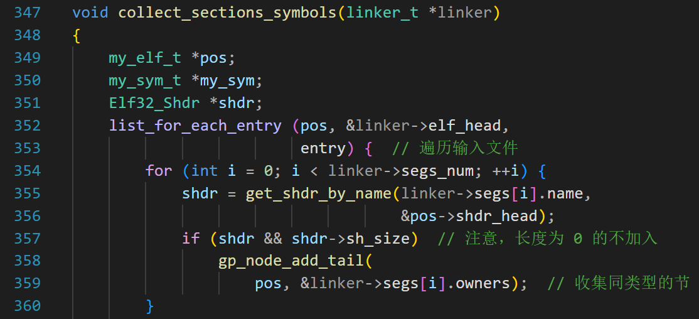
第 352，遍历 elf_head 链表，所有的.o 都在上面。
第 354 行，用一个循环，取出 segs[i] 的 name 字段；
第 355 行，在当前的 .o 的 节头表中查找，如果存在和 name 同名的节，且节的长度不是 0，则把这个 .o 的 my_elf_t 结构体的地址，加入链表 segs[i].owners；
注意，是把地址加入，调用的是 gp_node_add_tail（如果读者忘了，可以去我们的项目代码 gp_list.c 中复习）；
符号解析
collect_sections_symbols 函数还没有完
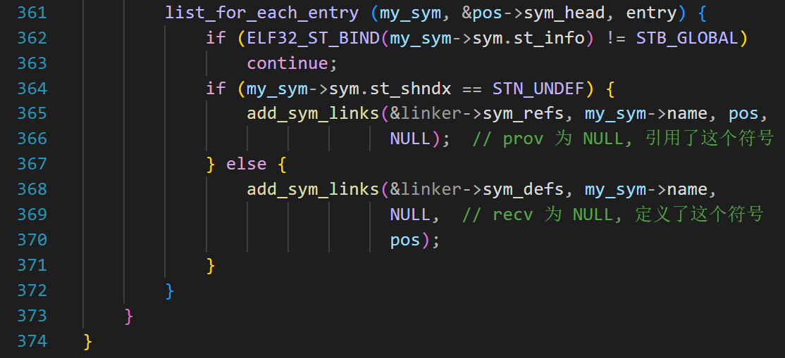
第 361 行，遍历这个.o 的符号链表，我们只关心全局符号，所以第 362 行，跳过本地符号。
第 364 行，如果这个符号未定义，则加入 sym_refs 链表；
否则，加入 sym_defs 链表；
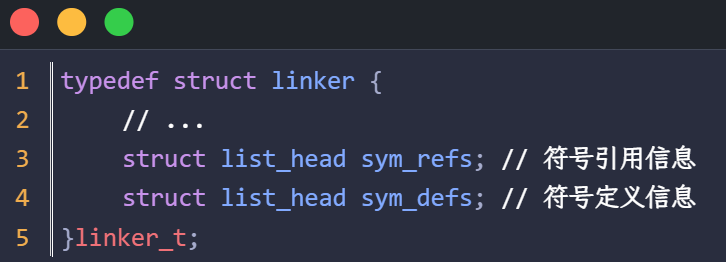
linker_t 结构体里面的 sym_refs 和 sym_defs，分别是两个链表的头节点；
sym_refs 记录符号引用信息，sym_defs 记录符号定义信息，都是针对全局符号。
举个例子，a.o 里面定义了函数 my_printf,那么这个符号应该加入 sym_defs 链表。
b.o 里面调用了函数 my_printf，这个符号应该加入 sym_refs 链表。
比较常见的叫法是导出符号和导入符号。
导出符号：一个模块对外公开的符号，可供其他模块使用。
导入符号：一个模块引用的、但定义在其他模块中的符号。
如何知道是定义了还是引用呢？
如果是引用，那么此符号不在本文件，它的 st_shndx 就是 STN_UNDEF；否则，st_shndx 表示它被定义的节的索引，必然不是 STN_UNDEF；
前面的代码第 365、368 调用了 add_sym_links 函数；
1 | |
第 1~7 行定义了 sym_link_t;
第 2 行，是符号的名字;
第 3~4 行分别是引用此符号和提供此符号的文件;
第 5~6 行，用来加入链表和哈希表;
第 9 行是 add_sym_links 函数;
第 1 个参数是 head，指明要加入哪个链表，sym_refs 或 sym_defs;
第 2 个参数是符号的名字;
第 3、4 个参数：
- 如果一个 .o 文件定义了某个符号，那么 prov 就指向这个文件的 my_elf_t 结构，recv 是 NULL
- 如果一个 .o 文件引用了某个符号，那么 recv 就指向这个文件的 my_elf_t 结构， prov 是 NULL
再回到前面的代码
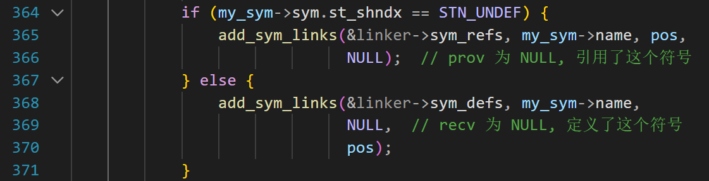
第 364 行，如果 st_shndx 是否为 STN_UNDEF，说明是引用其他文件的符号，加入 &linker->sym_refs 链表；
否则，加入 &linker->sym_defs 链表。
收集节是为了合并同类项，为后面的地址分配做准备;
收集全局符号，是为了做符号解析。
符号解析包括判断是否有符号重复定义，是否有符号未定义。
是否重复定义
为了缩短查找时间，我们定义一个哈希表。
sym_defs_tab 里面仅加入定义的符号
1 | |
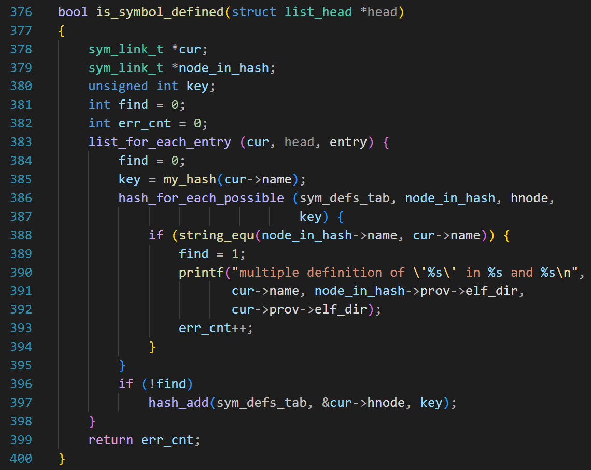
此函数用来判断是否有符号重复定义，参数应该传入 sym_defs （导出符号）链表的头节点；
第 383 行，遍历 sym_defs 链表，第 385，计算符号的 key，key 值决定映射到哈希表的哪一个桶；
第 386 行，遍历哈希表中对应的桶，如果第 388 行为真，说明此符号已经在哈希表中了，第 390 行报错，重复定义；
例如 a.o 定义了变量 hello，b.o 也定义了变量 hello，这肯定不行；
如果遍历完桶上的所有节点，都没有遇到同名的符号，说明没有重复定义，第 397 行，把它加入哈希表；
以上函数执行后，哈希表 sym_defs_tab 中就是所有 .o 中定义的符号。
是否未定义
除了判断符号是否重复，还要判断符号是否未定义
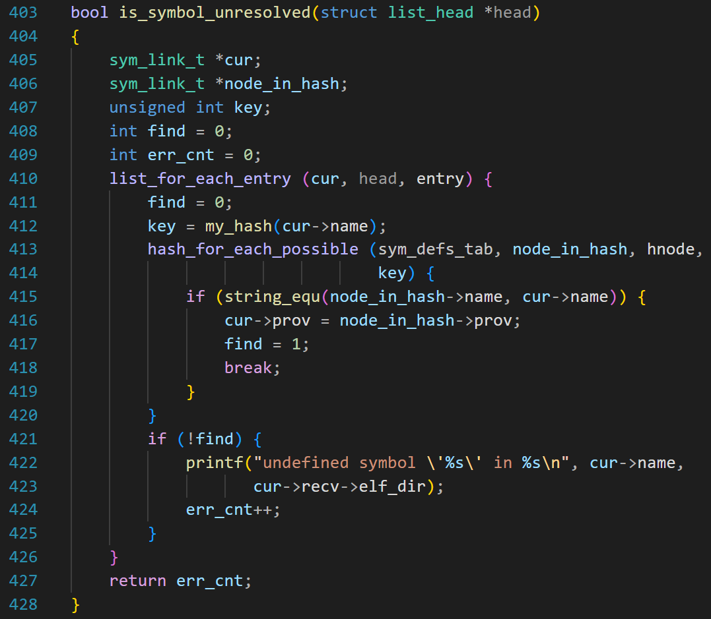
此函数的参数应该传入 sym_refs 链表的头节点。
第 410 行，遍历这个链表，拿出每一个被引用的符号。计算 Key 值，在哈希表中查找，如果找到，填写它的 prov 字段，也就是定义此符号的文件。
如果在哈希表中查不到，第 422 行报错，符号未定义。